실습1. Kinesis로 S3에 데이터 수집
Lab 설명
이번 Lab은 EC2에서 발생하는 데이터를 Kinesis Firehose를 통해 수집하여 S3에 저장합니다. 그 후 Kinesis Analytics로 실시간 쿼리해 분석해보고, 결과를 S3에 다시 저장합니다.
Lab Architecture

Kinesis Firehose 생성 (원본 데이터)
Kinesis Firehose를 통해 앞서 생성한 EC2가 발생시키는 실시간 데이터를 S3, Redshift, ElasticSearch 등의 목적지에 수집할 수 있습니다.
- AWS Management Console에서 Kinesis 서비스를 선택합니다. (Region : Oregon)
- Get Started 버튼을 클릭합니다.
- Deliver streaming data with Kinesis Firehose delivery streams 메뉴의 Create delivery stream 을 클릭하여 새로운 Firehose 전송 스트림 생성을 시작합니다.

- Delivery stream name에 Source 를 입력한 뒤 Next를 클릭합니다. (주의 : Source 이외의 name을 지정할 경우 EC2에서 Kinesis Firehose로 log가 전송되지 않습니다.)
- Record transformation / Record format conversion 은 default인 Disabled로 두고 Next를 클릭합니다.
- Destination은 Amazon S3를 선택하고 아래 S3 bucket은 앞서 생성한 bucket을 선택합니다. Prefix에는 source/ 를 입력합니다. Next를 클릭합니다

- Buffer size는 1MB, Buffer interval은 60 seconds로 설정합니다.
- 아래 IAM role에서 Create new, or Choose 버튼을 클릭합니다. 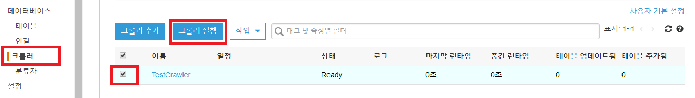
- 새로 열린 탭에서 필요한 정책이 포함된 IAM 역할 firehose_delivery_role을 자동으로 생성합니다. Allow 버튼을 클릭하여 진행합니다. 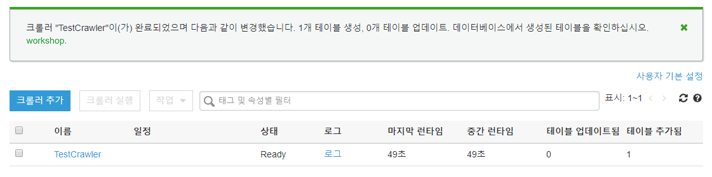
- 새롭게 생성된 역할이 추가된 것을 확인한 뒤 Next 버튼을 클릭합니다.

- Review에서 입력한 정보를 확인한 뒤 틀린 부분이 없다면 Create delivery stream 버튼을 클릭하여 Firehose 생성을 완료합니다. 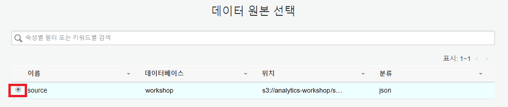
- Firehose delivery streams 가 생성 되었습니다. 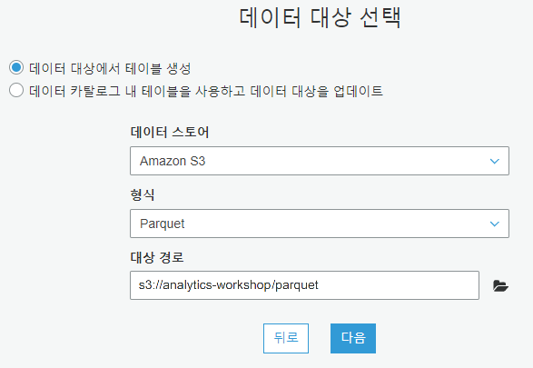
데이터 수집 확인
생성한 Firehose가 정상적으로 데이터를 수집하는지 확인해봅니다.
- 앞서 생성한 EC2 인스턴스에 system manager - session manager로 접속을 합니다.
- 홈 디렉토리로 이동 후, firehose.py 를 실행합니다.
cd ~
python firehose.py
- 매 초 데이터가 발생하는 것을 확인합니다. 충분한 데이터 수집을 위해 실행 중인 상태로 다음 단계를 진행합니다.
- 몇 분 뒤 생성한 S3 bucket에 가보면 생성된 원본 데이터가 Firehose를 통해 S3에 저장되는 것을 확인할 수 있습니다. 이 때 지정한 Prefix인 source 폴더에 데이터가 저장됩니다. 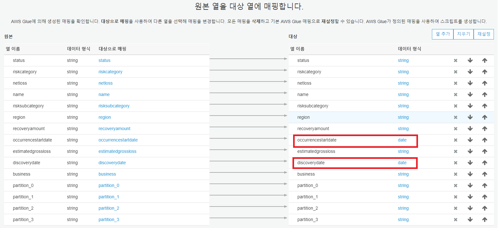 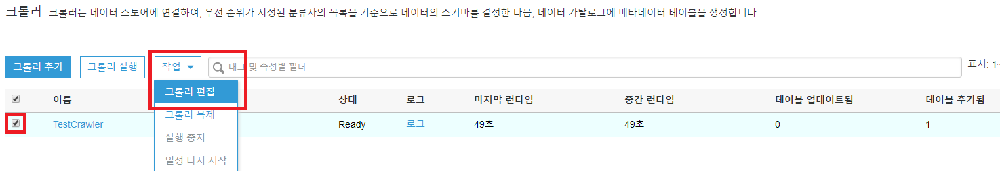
Kinesis Firehose 생성 (아웃풋 데이터)
앞서 생성한 Firehose 전송 스트림과 동일한 방법으로 Destination 전송 스트림을 생성합니다. 이 때, Delivery stream name과 S3 destination의 Prefix만 새로운 값을 입력합니다.
- Delivery stream name에 Destination 를 입력한 뒤 Next를 클릭합니다. 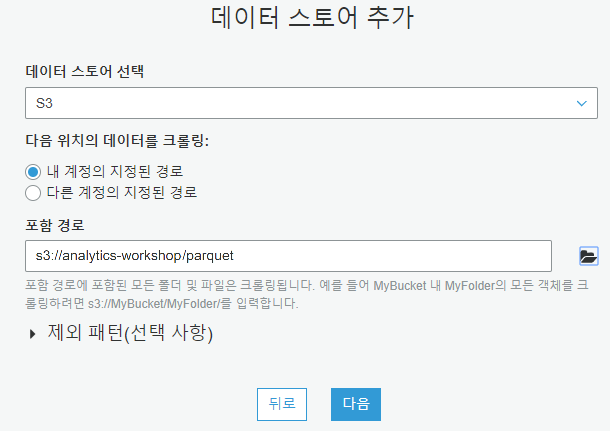
- Destination은 Amazon S3를 선택하고 아래 S3 bucket은 앞서 생성한 bucket을 선택합니다. Prefix에는 destination/ 을 입력합니다. Next를 클릭합니다.

- Buffer size는 1MB, Buffer interval은 60 seconds로 설정합니다.
- IAM Role은 앞서 생성된 firehose_delivery_role을 선택합니다. Policy Name은 Create a new Role Policy를 선택합니다. 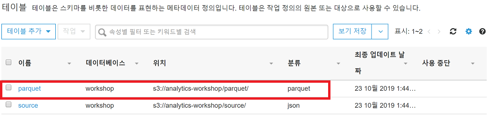
- Source, Destination 2개의 Firehose 전송 스트림 생성을 완료합니다. 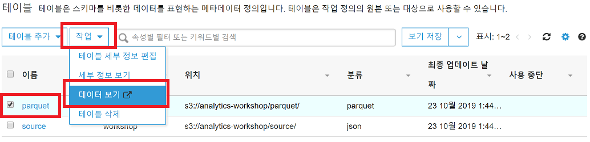
Kinesis Analytics Application - 생성
Kinesis Analytics를 활용하여 스트리밍 데이터를 처리할 application을 생성합니다.
- AWS Management Console에 로그인 한 뒤 Kinesis 서비스에 접속합니다.
- Kinesis analytics applications 의 Create analytics application을 선택합니다. 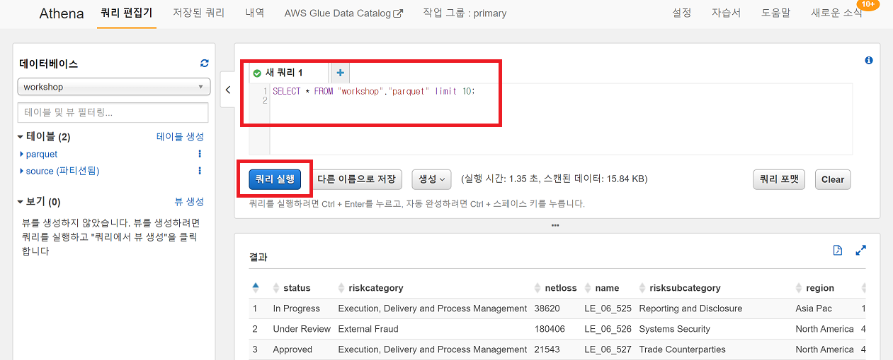
- Application name에 StreamApplication을 입력하고 Create application 버튼을 클릭합니다.

Kinesis Analytics Application - Source 지정
- 생성한 application 화면으로 이동 후 Connect streaming data 버튼을 클릭합니다.
- Source는 Kinesis Firehose delivery stream 을 선택하고 앞서 생성한 2개의 스트림 중 Source 를 선택합니다. [Discover Schema] 버튼을 클릭하여 Schema를 분석합니다. Schema 분석 후 아래에 샘플 데이터를 보여줍니다. (Schema 탐색이 실패했다면 EC2 인스턴스에서 firehose.py 가 실행 중 인지 확인합니다)

- Schema분석이 끝나면 DATE 데이터 타입을 지정해주기 위해 Edit schema 버튼을 클릭합니다. 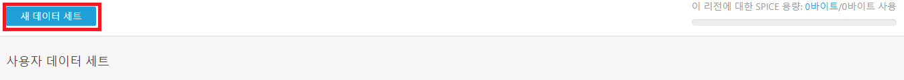
- OccurrenceStartDate와 DiscoveryDate의 타입을 DATE로 변경해줍니다. NetLoss, RecoveryAmount, EstimatedGrossLoss는 DOUBLE로 변경해줍니다. Save schema and update stream samples 버튼을 클릭하여 저장합니다.
- 저장이 완료되면 Exit(done) 버튼을 클릭하여 Source 지정을 완료합니다.
Kinesis Analytics Application - SQL 실시간 쿼리
- Go to SQL editor 메뉴로 이동합니다.

- Text editor에 다음과 같은 SQL문을 입력한 뒤 Save and run SQL 버튼을 클릭합니다. (이 때 Source data가 없다는 문구가 표시된다면 EC2에서 firehose.py가 실행 중인지 확인 후 Refresh 합니다.)
CREATE OR REPLACE STREAM "DESTINATION_SQL_BASIC_STREAM" (
Region VARCHAR(16),
Business VARCHAR(32),
Name VARCHAR(16),
Status VARCHAR(16),
RiskCategory VARCHAR(64),
RiskSubCategory VARCHAR(64),
DiscoveryDate DATE,
OccurrenceStartDate DATE,
NetLoss DOUBLE,
RecoveryAmount DOUBLE,
EstimatedGrossLoss DOUBLE);
CREATE OR REPLACE PUMP "STREAM_PUMP_1" AS
INSERT INTO
"DESTINATION_SQL_BASIC_STREAM"
SELECT STREAM "Region", "Business", "Name", "Status", "RiskCategory", "RiskSubCategory", "DiscoveryDate", "OccurrenceStartDate", "NetLoss", "RecoveryAmount", "EstimatedGrossLoss"
FROM "SOURCE_SQL_STREAM_001";
- SQL 쿼리가 실시간으로 수행되는 것을 확인할 수 있습니다. Close 버튼을 클릭합니다.
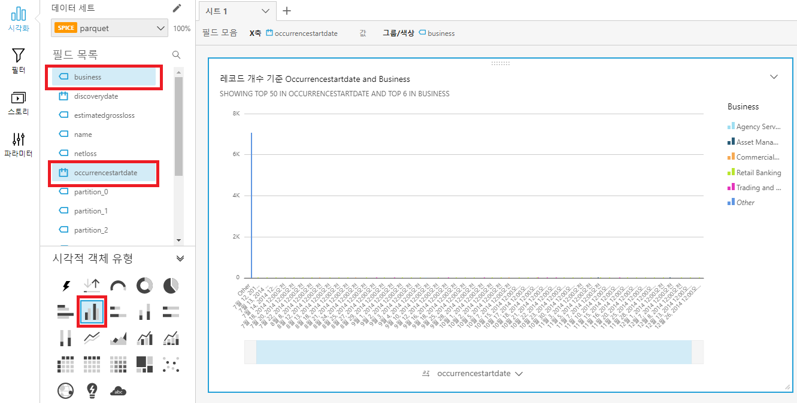

Kinesis Analytics Application - Destination 지정
- Kinesis Analytics의 SQL 수행 결과를 S3에 저장할 수 있습니다. Kinesis Analytics StreamApplication 화면으로 돌아가 Connect to a destination 을 클릭합니다.

-
- Destination : Kinesis Firehose delivery stream
- Kinesis Firehose delivery stream : Destination
- In-application stream name : DESTINATION_SQL_BASIC_STREAM,
- Output format : JSON
- Access to chosen resources : Create
- update IAM role kinesis-analytics-StreamApplication-us-west-2
을 지정한 후 Save and Continue 버튼을 클릭합니다.

- Destination이 설정 되었습니다. Exit to Kinesis Analytics applications 을 클릭합니다.

- EC2에서 firehose.py 실행을 중단했다면 다시 실행합니다.
- 몇 분 뒤 S3 bucket을 보면 설정한 Prefix인 destination 폴더가 생성된 것을 확인할 수 있습니다. 해당 폴더에는 설정한대로 JSON 포맷으로 데이터가 수집됩니다.